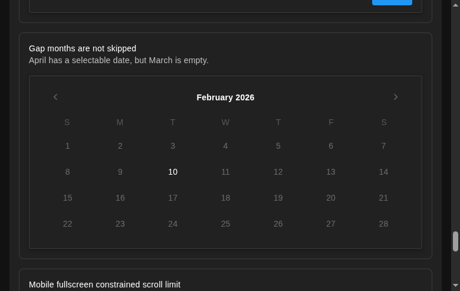

Desktop
Two slots show October and March together. One slot jumps between them. Month headings and an availability notice make the discontinuity explicit.
Choose an available date.
Confirmed: October 2026 cannot reach March 2027 when every intervening month is unavailable. Use one shared month search, with a compact gap indicator on mobile and direct month navigation on desktop.
Try one or two desktop calendars, navigate with the arrows, and select the 10th. The mobile list scrolls directly from October to March.
Demo: only October 10 and March 10 are allowed; explicit bounds run from October 2026 through March 2027.
Two slots show October and March together. One slot jumps between them. Month headings and an availability notice make the discontinuity explicit.
A localized separator replaces four unavailable calendars. It describes dates unavailable for the current selection phase.
Preserve the displayed or selected month when range constraints change. Resolve the surrounding months again so the calendar stays anchored and availability stays current.
Reproduce from the repository: bash .lavish/reproduce-allowed-date-gap.sh. It creates and removes a temporary test file; a failing exit status confirms the current bug.

The existing Advanced demo uses February → April and reproduces the same cause as the October → March diagnostic.
If that month has no selectable date, both the button and navigation action are blocked.
Initial construction, backward loading, and forward loading stop on the first unavailable month.
The failure is reaching the month. The existing day-selection predicate can be reused.
Instantiate a shared internal month-search module once in the picker and pass it to both existing view composables. Reuse monthHasSelectableDate() for selection rules and the configured date adapter for all date arithmetic.
Search from a month in either direction. Return the next selectable month and the skipped interval, a confirmed bound, or a continuation cursor. Both callers build an ordered list of month entries with gap metadata.
Suggested placement: src/composables/useAdvancedDateMonthAvailability.ts. Replace the duplicated availability setup in navigation and mobile windowing.
Desktop owns arrows, headings, focus, and announcements. Mobile owns scrolling, prepend/append, height measurement, and scroll restoration. Both receive the same resolved month sequence.
Change mobile's consecutive-month start/count arithmetic to explicit month entries. The existing ten-month rendering cap counts calendars; separators add no calendar grids.
An arbitrary allowedDates callback cannot prove that no later dates exist without a finite bound.
Cancel or discard searches when availability changes. Keep the cache bounded and reactive to bounds, callbacks and their reactive data, the draft, range mode, and the active start/end field.
Ran npm update with an isolated npm 11 command after the installed npm 10 resolver failed. Updates include Vue 3.5.43 and Vuetify 4.2.4. Upgraded vite-plugin-dts from 4.5.4 to 5.1.2 to remove the vulnerable declaration-build dependency chain, following its official migration guide.
One test now waits for Vuetify's validation-message leave transition; the field already clears its error immediately. The declaration plugin upgrade retains all 34 declaration files with only import-quote formatting differences. The gap reproduction still fails as expected; the picker fix remains a proposal.